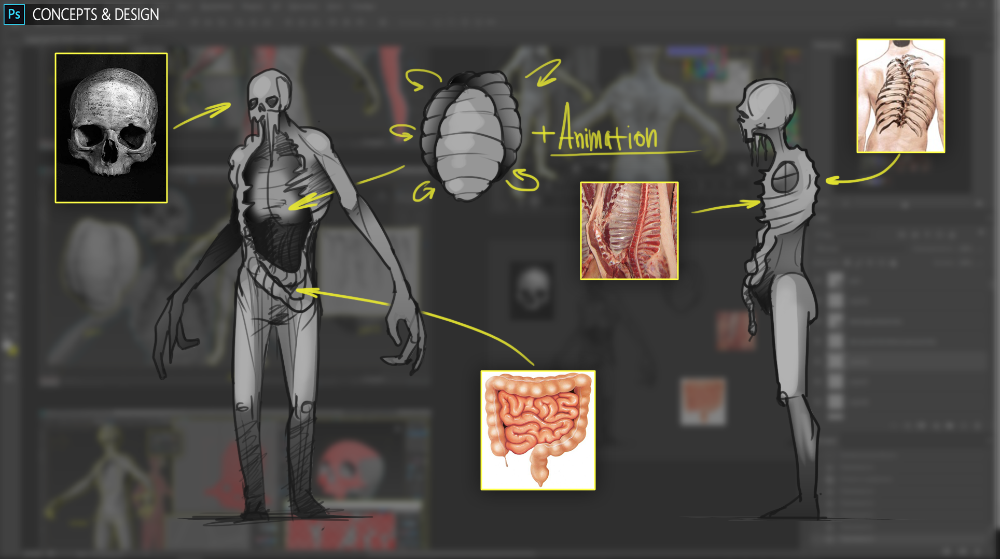
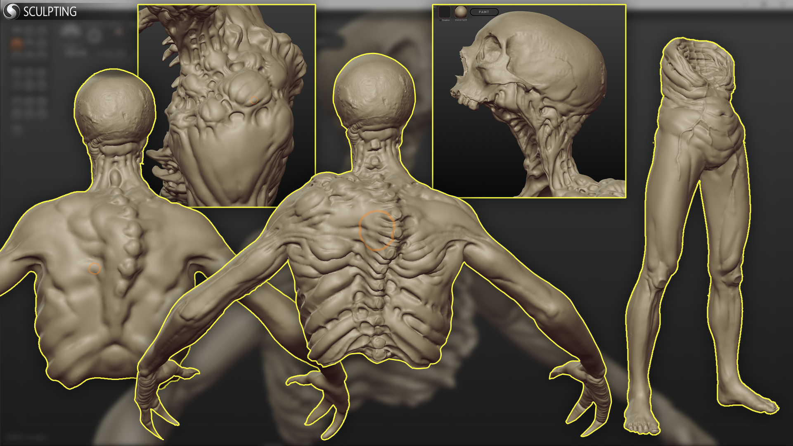
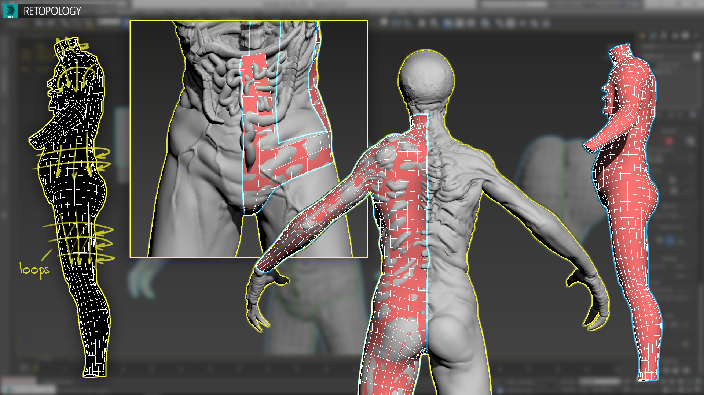

Этап 1 — Концепты и дизайн
Как и в любом другом деле, начинать следует с идеи, которую нам необходимо выразить в концептах. Это важный этап, который будет фундаментом для всей дальнейшей работы. На самом деле не так важно, какого качество будут эскизы (да-да, я имею ввиду себя) главное, чтобы они были. Потому что эскиз это план, следуя которому вы сэкономите уйму времени и нервов. Имея эскиз, вы будете четко представлять финальный результат и шаги, которые необходимы для его реализации. Как говорится «Кораблю, который не знает куда плыть, никакой ветер не будет попутным».


Этап 2 — Скульптинг high poly модели
Вам потребуется задействовать все имеющиеся знания и навыки, чтобы вылепить вашего персонажа, не жалея полигонов. Главная задача — создать максимально детализированную модель. Потому что, на следующих этапах, внести какую либо детализацию будет проблематично. Для этой задачи прекрасно подойдет ZBrush или Sculptris. Если модель не сильно сложная, я предпочитаю использовать Sculptris, так как в нем крайне аскетичный интерфейс и есть возможность создания динамической топологии.
Этап 3 — Ретопология
Завершив работу над high poly моделью, можно смело приступать к ее оптимизации, потому что в том виде, в котором находится модель сейчас, использование в игре крайне не рационально. Вряд ли найдется тот смельчак, который отважился бы заскинить модель в 20 миллионов полигонов и с абсолютно хаотичной сеткой. Поэтому мы приступаем к процессу ретопологии, основной сутью которого является уменьшение количество полигонов до оптимального и построения правильной сетки пригодной для анимации. Ретопологию можно делать как в стороннем софте, так и в 3D Max с помощью инструмента PolyDraw. Собственно к этому и приступаем. Стараемся строить топологию используя «лупы» (loop, с англ. — петля, виток) в местах сгибов, это облегчит дальнейший скиннинг и обеспечит анимациям более естественный вид.
